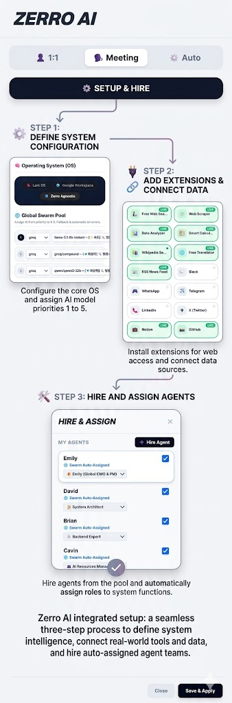

Command multiple specialized AI agents executing tasks in parallel. Integrated with Native LARK/Google ecosystems, Hyper-Search, and Long-Term Vector Memory.

Powered by Next.js, Swarm Logic, and Vector DB
The Overseer dynamically analyzes dependencies and deploys specialized sub-agents via Promise.all. Independent tasks are executed simultaneously, shattering the limits of linear AI logic.
Long-term memory architecture utilizing pgvector and Gemini Embeddings. Heavy contexts are auto-compressed via LLM before vectorization, completely preventing context window explosion.
Consolidated FREE_SEARCH mechanism. A single pipeline that autonomously routes queries across Wikipedia, News APIs, and academic papers without archaic web scrapers or 403 errors.
Deprecated fragile markdown tag parsing. ZerroAI enforces strict, robust Native JSON schemas for tool execution, guaranteeing zero parameter parsing errors across 50+ tool sets.
Agents operate on the Reasoning + Acting loop, allowing auto-repair upon API failures. Fully prepared for Model Context Protocol (MCP) for dynamic, server-based tool discovery.
Toggle between LARK (Feishu) or Google Workspace. The Overseer adapts its bias in real-time, routing final reports exclusively to Lark Docs, Bases, or Slack depending on your active OS.
Strategic OS: Empowering Commanders with AI Orchestration
Select your workspace: Lark, Google, or Native. Overseer routes outputs strictly to the chosen ecosystem.
Deploy the primary LLM (Groq, Gemini, Ollama). Swap intelligence seamlessly based on task complexity.
Connect Supabase to unlock RAG. Agents recall past contexts with pinpoint accuracy.
Equip agents with FREE_SEARCH, replacing 10+ fragile scrapers with one god-tier data pipeline.
Execute a strict, waterfall workflow using Linear Canvas. Perfect for operations requiring absolute human oversight and sequential accuracy.
Step-by-Step Approval
Fact-checking → Drafting → Final Recommendation. Move to the next node only when validated.
Call upon @Overseer in the chat. It autonomously dissects your objective and dispatches sub-agents in parallel to crush tasks instantly.
Auto-Routing & ReAct
Agents self-correct API failures. Context is shared via internal Memory Bus across the swarm.
Finalize intelligence and deploy to action. The ecosystem writes directly into your company's actual database.
Lark Bitable Integration
Automatically creates Bitable records, sets up Notion databases, or sends structured Slack briefings.
This Python script uses the Groq API to fetch and process data on public figures, groups, and trends...
Automatically generates README files and code reviews for GitHub repositories using Groq and Llama 3.1...
AI Sports Edge is a system that uses ESPN and Google News RSS to collect real-time facts and predicts game outcomes...
Emily AI: PM Agent is a Streamlit application that assists with project management and idea generation...
LOBSTER AGENT automates tool execution and generates results based on user input and AI models...
A multilingual database that collects and analyzes slang and slur terms across 14 languages to support research...
Your autonomous agents are waiting for commands.
Deploy System Now